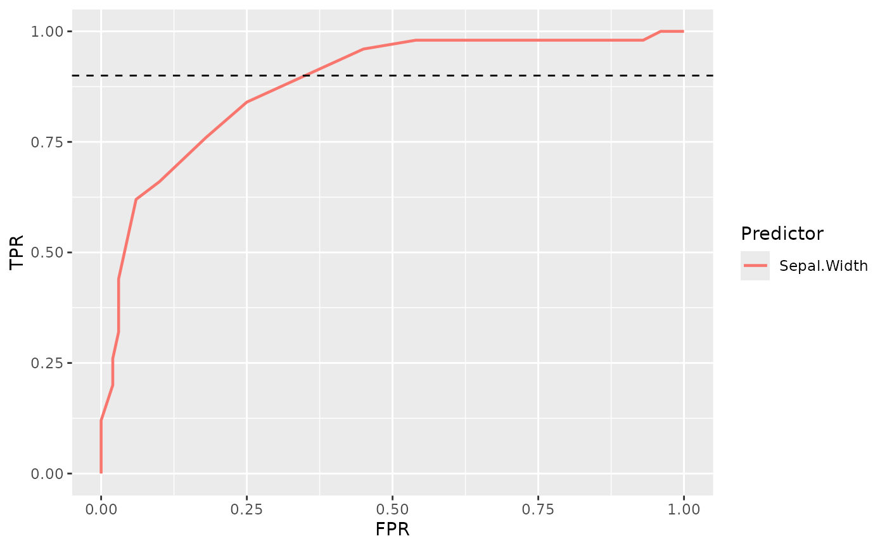
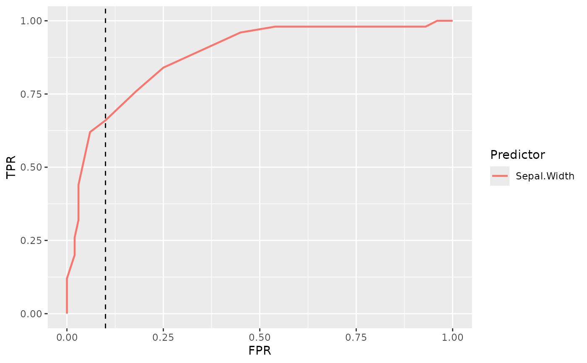

Add a threshold line to a ROC plot
plot_thresholds.RdInclude a threshold line on an specified axis.
Usage
add_fpr_threshold_line(threshold)
add_tpr_threshold_line(threshold)
add_threshold_line(threshold, ratio = NULL)Arguments
- threshold
A number between 0 and 1, both inclusive, which represents the region bound where to calculate partial area under curve.
If
ratio = "tpr", it represents lower bound of the TPR region, being its upper limit equal to 1.If
ratio = "fpr", it represents the upper bound of the FPR region, being its lower limit equal to 0.- ratio
Ratio in which to display threshold.
If
"tpr"threshold will be displayed in TPR, y axisIf
"fpr"it will be displayed in FPR, x axis.
Examples
# Add two threshold line in TPR = 0.9 and FPR = 0.1
plot_roc_curve(iris, response = Species, predictor = Sepal.Width) +
add_threshold_line(threshold = 0.9, ratio = "tpr") +
add_threshold_line(threshold = 0.1, ratio = "fpr")
# Add threshold line in TPR = 0.9
plot_roc_curve(iris, response = Species, predictor = Sepal.Width) +
add_tpr_threshold_line(threshold = 0.9)

# Add threshold line in FPR = 0.1
plot_roc_curve(iris, response = Species, predictor = Sepal.Width) +
add_fpr_threshold_line(threshold = 0.1)
